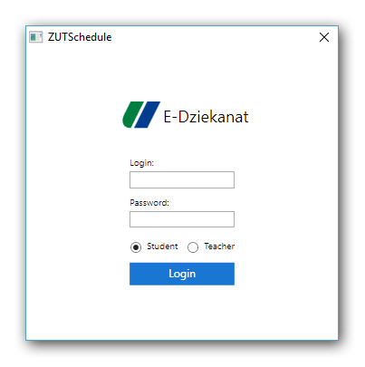

Aplikacja zaczyna nabierać kształtów. W tym tygodniu głównie skupiłem swoją uwagę na zrobieniu ekranu logowania. Dodatkowo prawie ukończyłem część wizualną aplikacji desktopowej, z wizualnych rzeczy pozostała tylko do zrobienia karuzela wyświetlająca informacje pobrane ze stron internetowych.
Ekran logowania
W odróżnieniu od Xamarina WPF ma możliwość podłączenia pola z hasłem ze zmienną typu
StringSecure, co gwarantuje bezpieczeństwo hasła w pamięci komputera. Prawdą jest, że w celu zalogowania będzie konieczność wyciągnięcia wartości pierwotnej, ale z tym niestety nie można nic zrobić. W przyszłości użytkownik będzie mógł zapisać w ustawieniach aplikacji swój login i hasło, aby aplikacja mogła sama pobierać najnowsze informacje z systemu. Login i hasło będą szyfrowane za pomocą
DPAPI dostarczonego od systemu Windows. Jeszcze będę się rozglądał, może znajdę jakieś rozwiązanie na każdą platformę.

Wygląd aplikacji desktopowej
W tym tygodniu również dokończyłem wygląd aplikacji pod względem trybów 1, 5 oraz 7-dniowych. Aplikacja pokazuje prawidłowo aktualny dzień wraz z aktualnymi zajęciami. Każdy
ViewModel ma informacje odnośnie do jego aktualności.
Dodałem jeszcze kolorowanie według statusów zajęć. Jeżeli zajęcia są odwołane, wpis będzie pokolorowany na czerwono, odwołane z polecenia Rektora na zielono, a jeżeli na zajęciach będzie egzamin, będą pokolorowane na fioletowo.
Wydajność
Podczas przełączania tygodni od czasu do czasu przyciski nie reagują na kliknięcie. Obecnie nie wiem, czym jest to spowodowane, ale w następnym tygodniu na pewno postaram się rozwiązać ten problem. Gdyż płynne działanie aplikacji to jest priorytet.
Kończąc
Niestety w tym tygodniu napotkałem na jakiś błąd w aplikacji mobilnej. Nie pojawia się żaden komunikat o błędzie i aplikacja nie chce się uruchomić. Postaram się w najbliższym tygodniu lub dwóch zdiagnozować problem i go naprawić. Nie przejmuję się jednak postojem aplikacji mobilnej, ponieważ i tak cała logika z aplikacji desktopowej będzie używana w mobilnej. Więc postoju jako takiego nie ma. Po prostu aplikacja desktopowa będzie skończona szybciej.
[KodNaGicie name="ZUTSchedule"]
{kind=link}